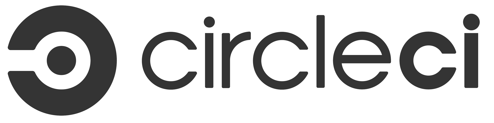

IC
Intégration Continue
Par Clément Boudon
Principes de base
Développement moderne
Avant : 1 release = plusieurs features
Maintenant : 1 feature = 1 release
Problème : Stabilité vs Réactivité
Versionnement du code

POO et Tests Unitaires
Développement objet : découpage par modules testables individuellement.
use Silex\WebTestCase;
class MainTest extends WebTestCase
{
public function createApplication()
{
$app = require __DIR__.'/../../../app.php';
return $app;
}
public function testInitialEndpoint()
{
$client = $this->createClient()->request('GET', '/');
$this->assertTrue($client->getResponse()->isOk());
$this->assertContains(
'API DirtyBranding.',
$client->getResponse()->getContent());
}
}
Intégration Continue
Tester l'ensemble de l'application à chaque release
(donc chaque feature).
Intégrer les modifs de la release dans l'application
Et après ?
Déploiement Continu
Mettre à jour l'applicatif en production.
Vocabulaire
- Principes DevOps
- Continuous Integration : Intégration continue
- Continuous Delivery : Livraison continue
- Continuous Deployment : Déploiement continu
Les outils d'intégration continue
1/ Hosted
Hébergé sur nos propres serveurs

Ou encore : CruiseControl, Apache Continuum, SonarQube, TeamCity, ...
Jenkins

Anciennement Hudson
En Java
Plugins (très) nombreux
2/ SAAS
Software As A Service


...
3/ Et pour les mobiles ?


Les outils de déploiement continu
EN FTP, SFTP, SSH
Push vers PAAS / Cloud
Envoi sur les plateformes d'hébergment cloud
...
Problématiques
Migration BDD
Tests Frontend (JS, CSS, HTML)
Tests d'affichage
Impact sur l'application
Etude de cas
API "DirtyBranding"

Recherche de marque (en "mega-alpha")
API basée sur Silex
Utilisation de tests unitaires
Via Codeship
Via Jenkins
That's all folks !
Références :
- Wikipedia - "Continuous Delivery"
- Martin Fowler - "Continuous Integration"
- Octo Talks Blog - "DevOps, de l’intégration continue au déploiement continu"
- Quora - "Difference between CI tools"
- Sitepoint - "Jenkins"
- Blog Pascal Martin - "Jenkins et PHP"
Retrouvez cette présentation sur clementboudon.github.io/CI
Powered by Reveal.js